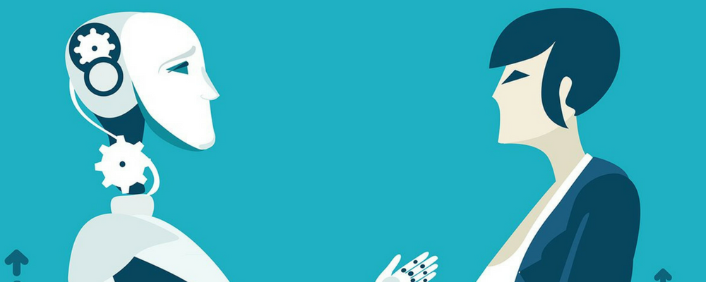

Роботика
Роботиката е клон на техниката, машиностроенето, електроинженерстовото и информатиката, в който са включени дизайна, строежа, управлението и приложението на роботи, както и компютърните системи, нужни за техния контрол, приемане на данни от сензори и обработка...
Прочетете повече...